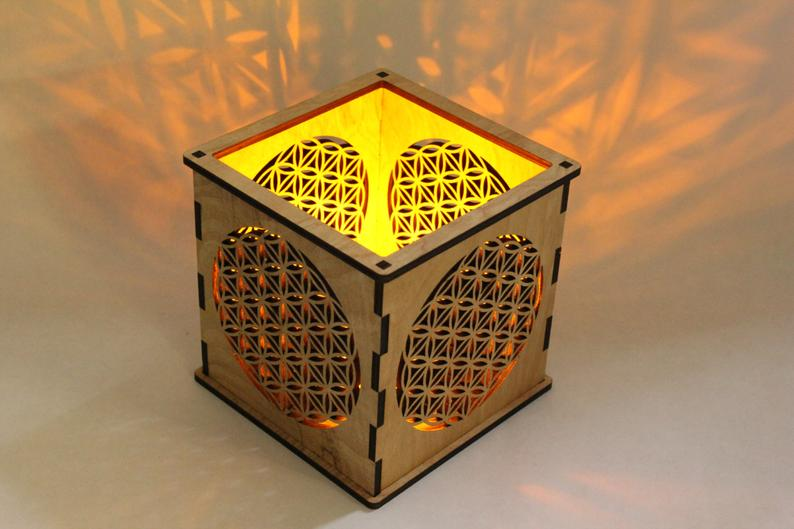
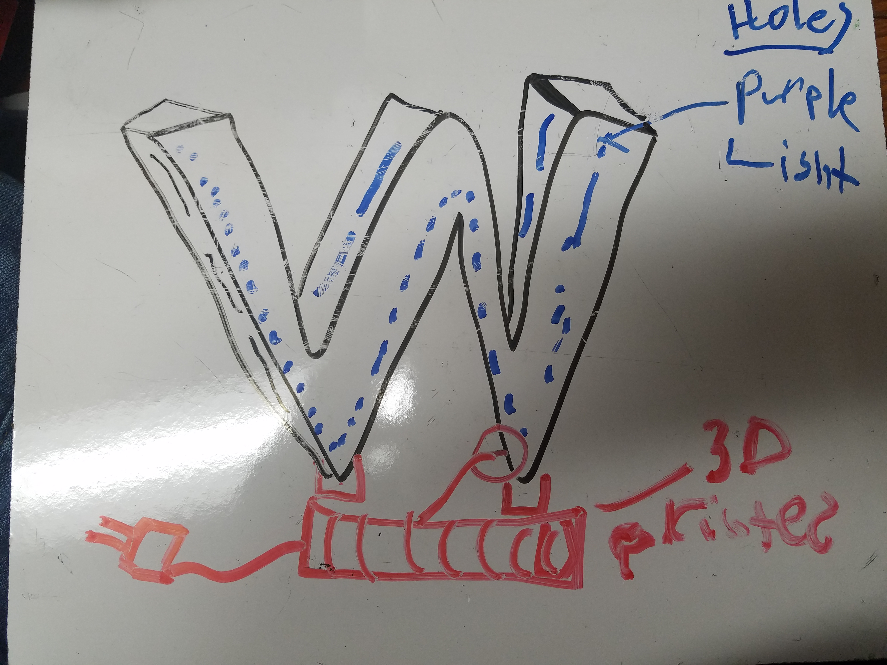
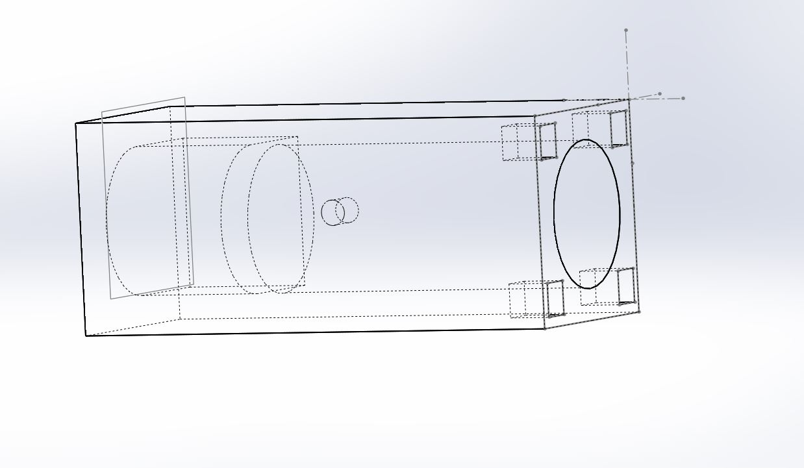

Lukas' Assignment 3: 3D Printed & Laser Cut Lamp!
Overview:


Synthesis / Define
Design prompt criteria:Ideation / Develop
The first thing i did was seek out inspiration online and brainstormed ideas.

In the sketch below, I explored how University of Washington's Logo could be integrated into a lamp.

After considering the time it would take to manufacture the prototype, I pivoted away from this design in addition to thinking about the value proposition created by the end user and the function of the lamp.

In the model below, I created a smart speaker holder inside of the lamp.
Due to printing constraints, I was unable to print off a model w/ smart speaker feature.

Test / Implementation / Deliver
I utilized Solidworks and Illustrator to prioritize Rapid prototyping in a timely manner rather than diving deeper into learning the Rhino software
This enabled me to better I utilize my time more efficiently than the last few projects.
The laser cut pieces were measured for the most part correctly, requiring only a handful tweaks to create a press fit.
The 3D model was setup correctly, but struggled from hardware limitations.
In the end, this benefited my workflow since as soon as i could cut/print I did, which allowed me to identify errors earlier on.

The Dragon curve fractal is sourced from Instructables

Problem:
The largest issue with this project was getting a 3D printer to work correctly.I used two different printers before finally finding a third working printer that would lay down fillament correctly.


Solution:
My solution to this issue was to troubleshoot the issue with about every solution in the book.From changing printers to tweaking the model, to buying new filament.
In the end, sometimes it is as simple as a hardware failure.
Overall, I did a good job not getting bogged down on these details and continued to itterate through my prototype in a timely manner without emotional distress.

In the end, the lamp changes colors according to music/noise.
Additionally, the user can adjust the function (lighting/shadows) of the lamp by removing puzzle pieces from the fractal portion of the lamp.
Reflection
In hindsight, I should have split the 3D printed model in half to reduce time to print.
That way I could have started printing two 6 hour prints instead of one 12 hour print.
Attribution:
Joshua and the Tuesday night Crew (Dhwani Vekaria, Julie Do, Demarcus, and Julie Rose) helped each other out with best practices.
Wooden chandelierMachine Settings:
Laser

3D Printer
Source files
Click the image below to download the Solidworks and Illustrator files
Dragon Curve